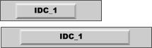

XmForm widget of Motif (quite old stuff...  ).
It's a little tedious, but very simple and efficient.
).
It's a little tedious, but very simple and efficient.
Title: Resizable dialogs, form views and property sheets for WTL
Author: Serge Weinstock
Email: sweinst@ukonline.co.uk
Environment: VC++ 6.0, NT 4.0/ Win 2000, Win95/98/Me
Keywords: Control, Dialog, Property Sheet, WTL
Level: Intermediate"
Description: Implementation of resizable dialogs, form views and property sheets for WTL
Section WTL
SubSection General
LayoutMgr.h in the header file of your dialog class and add the file LayoutMgr.cpp to your project.CResizableFormViewImpl instead of CDialogImpl.CResizableFormViewImpl before your own message handlers.DefineLayout method in order to set the layout constraints._controlsToClip which defines the controls which should be clipped when painting the dialog.
class MyFormView : public CResizableFormViewImpl<MyFormView>
{
public:
typedef CResizableFormViewImpl<MyFormView> dlgBase;
...
BEGIN_MSG_MAP(MyFormView)
CHAIN_MSG_MAP(dlgBase)
...
END_MSG_MAP()
...
virtual void DefineLayout();
static const UINT _controlsToClip[];
};
LayoutMgr.h in the header file of your dialog class and add the file LayoutMgr.cpp to your project.CResizableDialogImpl instead of CDialogImpl.CResizableDialogImpl before your own message handlers.DefineLayout method in order to set the layout constraints._controlsToClip which defines the controls which should be clipped when painting the dialog.CResizableDialogImpl constructor, you can change the value of the flag useHandle. If this flag
is set to true (default value), a sizing gripper is displayed in the lower right corner of the dialog.
class MyDialog : public CResizableDialogImpl<MyDialog>
{
public:
typedef CResizableDialogImpl<MyDialog> dlgBase;
...
BEGIN_MSG_MAP(MyDialog)
CHAIN_MSG_MAP(dlgBase)
...
END_MSG_MAP()
...
virtual void DefineLayout();
static const UINT _controlsToClip[];
};
LayoutMgr.h in the header files of your property sheet and property pages classes and add the file LayoutMgr.cpp to your project.CPopupResizablePropertySheetImpl instead of CPropertySheetImpl.CPopupResizablePropertySheetImpl constructor, you can change the value of the flag useHandle. If this flag
is set to true (default value), a sizing gripper is displayed in the lower right corner of the property sheet.CChildResizablePropertySheetImpl instead of CPropertySheetImpl.CChildResizablePropertySheetImpl.Create in the parent window for creating the property sheet.CPopupResizablePropertySheetImpl or CChildResizablePropertySheetImpl before your own message handlers.CResizablePropertyPageImpl instead of CPropertyPageImpl.DefineLayout method in order to set the layout constraints._controlsToClip which defines the controls which should be clipped when painting the dialog.WM_INITDIALOG message. If you want to do something just after the initialisation of the property sheet, you can
override the method OnInitDialog.
class MyPropertySheet : public CPopupResizablePropertySheetImpl<MyPropertySheet>
{
public:
typedef CPopupResizablePropertySheetImpl<MyPropertySheet> dlgBase;
...
BEGIN_MSG_MAP(MyPropertySheet)
CHAIN_MSG_MAP(dlgBase)
...
END_MSG_MAP()
...
};
Your propety page classes should look like:
class MyPropertyPage : public CResizablePropertyPageImpl<MyPropertyPage>
{
public:
typedef CResizablePropertyPageImpl<MyPropertyPage> dlgBase;
...
BEGIN_MSG_MAP(MyPropertyPage)
CHAIN_MSG_MAP(dlgBase)
...
END_MSG_MAP()
...
virtual void DefineLayout();
static const UINT _controlsToClip[];
};
In order to layout the children when the dialog is resized, you must override the DefineLayout method. This method is called during the initialisation
of the dialog and allow to define the geometrical relationships between the child window which will alow to move and resize them in the desired way.
The way of setting layout constraints is inspired by the methods of the XmForm widget of Motif (quite old stuff... ).
It's a little tedious, but very simple and efficient.
Constraints are defined by attaching the sides of a child window to the side of another child window or to one of the side of the parent window.
AttachNone). It means that when the dialog is resized, the child window is neither resized nor moved:
AttachForm).
For example the following code:
AttachForm(IDC_1, ATTACH_RIGHT);
will have the following effect:

AttachForm(IDC_1, ATTACH_LEFT);
AttachForm(IDC_1, ATTACH_RIGHT);
will have the following effect:

The horizontal or the vertical center of the child window can be attached to the parent window. For example the following code:
AttachForm(IDC_1, ATTACH_HCENTER);
will have the following effect:
AttachOppositeForm).
For example the following code:
AttachOppositeForm(IDC_1, ATTACH_LEFT);
will have the following effect:

AttachWidget).
For example the following code:
AttachForm(IDC_1, ATTACH_HCENTER);
AttachWidget(IDC_2, ATTACH_LEFT, IDC_1);
will have the following effect:
AttachOppositeWidget).
For example the following code:
AttachForm(IDC_1, ATTACH_LEFT);
AttachForm(IDC_1, ATTACH_RIGHT);
AttachOppositeWidget(IDC_2, ATTACH_LEFT, IDC_1);
AttachOppositeWidget(IDC_2, ATTACH_RIGHT, IDC_1);
will have the following effect:
The horizontal or the vertical center of the child window can be attached to the same side of another child window.
For example the following code:
AttachForm(IDC_1, ATTACH_LEFT);
AttachForm(IDC_1, ATTACH_RIGHT);
AttachOppositeWidget(IDC_2, ATTACH_HCENTER, IDC_1);
will have the following effect:
AttachPosition).
For example the following code:
SetNPositions(3);
AttachPosition(IDC_1, ATTACH_LEFT, 0);
AttachPosition(IDC_1, ATTACH_RIGHT, 1);
AttachPosition(IDC_2, ATTACH_LEFT, 1);
AttachPosition(IDC_2, ATTACH_RIGHT, 2);
AttachPosition(IDC_3, ATTACH_LEFT, 2);
AttachPosition(IDC_3, ATTACH_RIGHT, 3);
will have the following effect:
When a dialog is resized, the whole client are is filled with the background color, before the child window are painted. This causes screen flickering.
What's need to be done is to clip the children windows before painting the dialog background.
Dialogs can have the WS_CLIPCHILDREN window style which ensure that all the dialog children are clipped before painting.
But in most of the cases, it's not possible to use this style because controls like static controls don't paint their background themselves.
To avoid this, the WM_ERASEBKGND message is handled by all the CResizableXXXImpl classes. The classes excludes
all the controls which IDs are in the _controlsToClip array, from the DC used for painting the background. So for avoiding screen flickering,
you just have to "override" the _controlsToClip array.
Your classes should look like:
class MyDialog : public CResizableDialogImpl<MyDialog>
{
...
static const UINT _controlsToClip[];
};
const UINT MyDialog::_controlsToClip[] =
{
IDC_IMG,
IDOK,
...
0
};
The current code handles incorrectly the clipping of some controls when using Windows XP themes (the problems occur with tab controls and scrolled windows). Therefore, the automatic clipping of children control is disallowed when using Windows XP
If your dialog hosts ActiveX controls, use:
CAxResizableDialogImpl instead of CResizableDialogImplCAxResizableFormViewImpl instead of CResizableFormViewImplCAxResizablePropertyPageImpl instead of CResizablePropertyPageImplIn order to avoid to deal with dialogs of size 10x10 pixels, a minimum size for the dialogs and FormViews is set.
Unattach methods for removing a control from the list of windows managed by the layout manager .
.